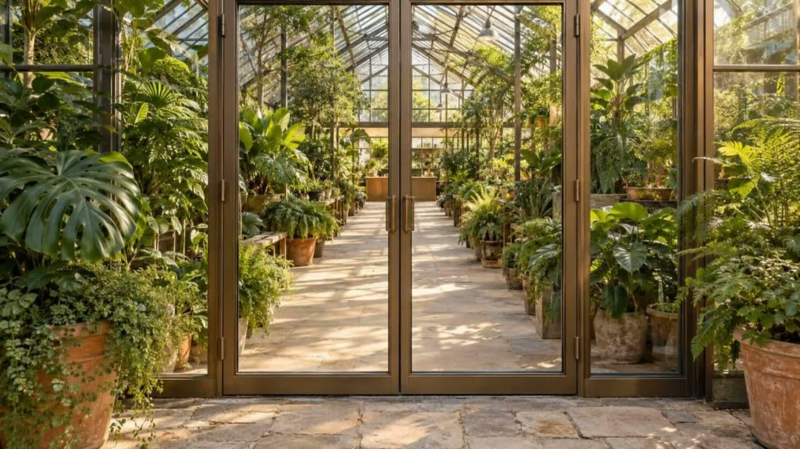

Aller à la visite

green
nouala
PÉPINIÈRE & PAYSAGE
La visite
Nos plantes
Vos jardins
Un projet en tête ?
↗
Préparation de la promenade…
Réessayer
Mouvement activé
Vue libre
⤢
✳
GREENNOUALA
L’entrée de la serre
00
/ 100
↓
GREENNOUALA / EXPLORER
Fermer
×
Le conseil
Les plantes
Les jardins
×
UNE ENVIE, UNE CONVERSATION
Faisons grandir
votre projet.
Votre message
Copier mon message
↗
Activez JavaScript pour parcourir la serre. GreenNouala · Pépinière & paysage.